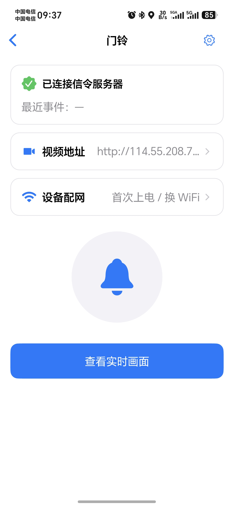

集设备配网、在线状态、实时画面与远程访问于一体。门铃与灯控、网关共享 LightMesh App， 同时采用独立 Wi-Fi 视频链路，兼顾统一体验与传输稳定性。

设备状态、网络配置、视频地址与实时画面入口集中呈现，减少页面跳转，让首次使用和日常查看保持同一套清晰路径。
信令连接状态与最近事件在设备页集中显示，在线情况清晰可见。
视频地址与画面入口保持紧邻，减少操作层级，提升访问效率。
首次使用或更换 Wi-Fi 时，可从同一设备页重新完成网络配置。
门铃、灯控节点与网关共用 App 设备体系，操作逻辑保持一致。
灯控节点通过 BLE Mesh 承载控制消息，门铃通过 Wi-Fi 承载视频数据。两条链路各司其职，并在 App、账号体系、设备状态与 OTA 入口处完成统一。
首次使用或更换网络时，App 将 Wi-Fi 与服务配置安全写入设备，完成网络连接和身份初始化。
门铃持续上报在线状态、事件与视频地址，App 根据设备状态提供对应的操作入口。
farmely/doorbell/<device_id>/up/status farmely/doorbell/<device_id>/up/event
同一画面页支持局域网与云端中继两种访问路径，兼顾本地低延迟体验和跨网络查看需求。
关键链路状态在产品界面中形成明确反馈，便于用户快速了解设备是否在线、画面是否可达以及当前采用的访问路径。
通过 Wi-Fi 与 MQTT 连接状态，清晰反馈设备的实时在线情况。
视频地址与连接结果同步呈现，让实时画面入口具备明确状态。
根据网络环境选择局域网或云端中继，覆盖近场与远程使用场景。
视频传输不占用 BLE Mesh 控制通道，保障灯控响应与视频访问互不影响。